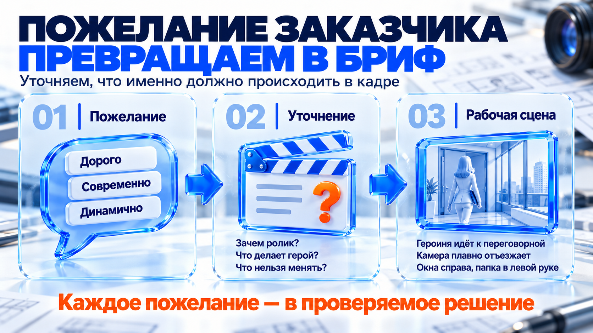
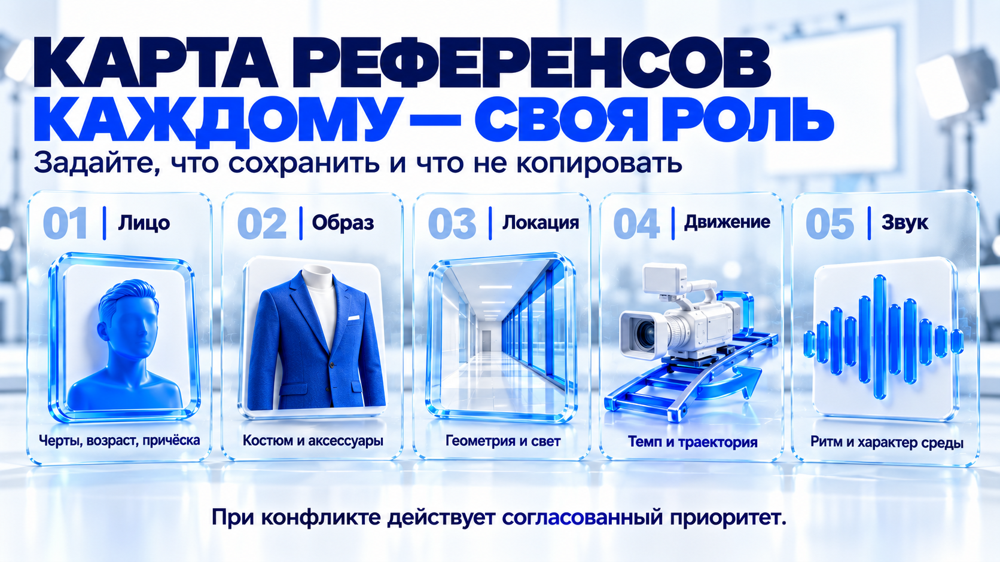
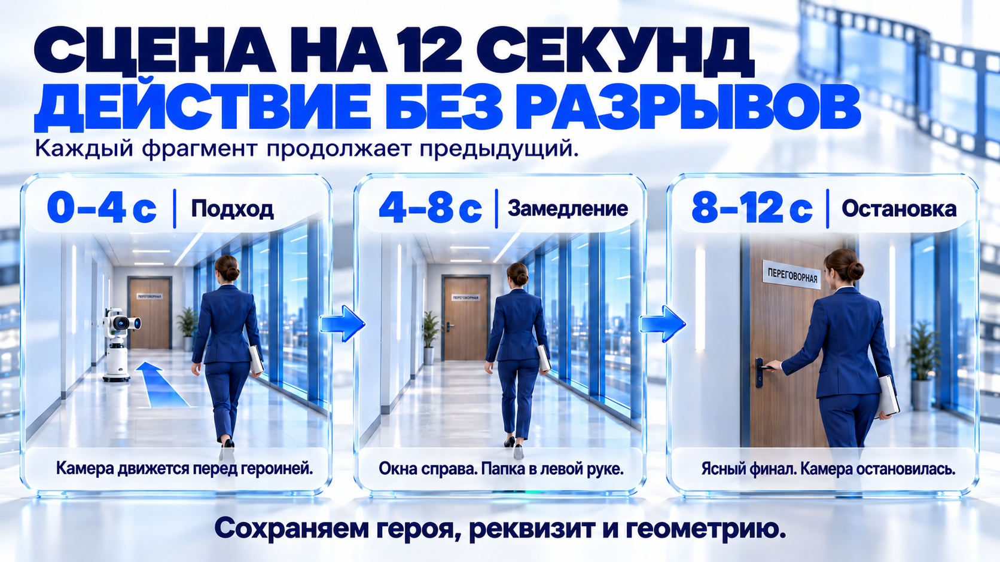
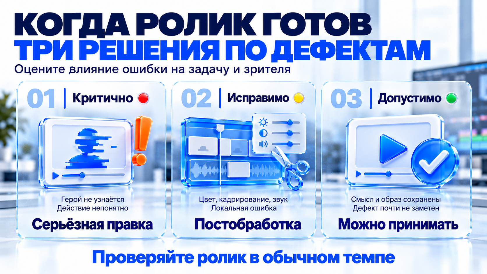

Что значит «работающее видео»
Красивый фрагмент становится рабочим роликом, когда выполняет задачу, сохраняет важные детали и укладывается в ресурсы.
От случайной удачи к управляемому процессу
Сегодня мы будем говорить о Seedance 2.5 и о том, как выстроить работу так, чтобы результат зависел не только от удачной случайности. Интерфейс займёт небольшую часть занятия. Основное внимание мы уделим решениям, которые принимаются до генерации и между итерациями.
Генеративная модель может выдать красивый фрагмент даже по короткому запросу. Для личного эксперимента этого иногда достаточно. В работе с заказчиком критерии становятся строже. Ролик должен выполнять конкретную задачу, сохранять важные детали и укладываться в доступное количество попыток.
Предсказуемый результат означает, что на каждом этапе мы понимаем, что проверяем и что будем менять, если результат нас не устроит.
Задача
Понятно, зачем существует ролик: привлечь внимание, развлечь, объяснить продукт, показать атмосферу, привести зрителя к покупке, регистрации или другому действию.
Смысл
Зритель считывает основное событие без дополнительного объяснения автора. Если человек должен трижды пересмотреть сцену, чтобы понять, кто что сделал, визуальная эффектность не спасает материал.
Консистентность
Герой, одежда, реквизит, продукт и локация сохраняют узнаваемость настолько, насколько это важно для задачи.
Формат
Длительность, соотношение сторон, темп, звук и композиция подходят площадке, на которой будет опубликован ролик.
Ресурсы
Результат получен в пределах согласованного времени, бюджета и количества итераций.
Описывайте дефект так, чтобы его можно было исправить
Важно различать художественную оценку и производственную. Фраза «мне не очень нравится» не подсказывает, что исправлять. Формулировка «на шестой секунде меняется лицо героини, поэтому зритель перестаёт узнавать персонажа» уже описывает конкретную проблему.
Остановитесь и подумайте
Какой дефект самый дорогой: внешность, действие, локация или камера?
Открыть разбор
У разных проектов будет разный приоритет. В рекламе косметики оттенок упаковки может быть важнее сложного движения камеры. В ролике эксперта лицо и естественная мимика важнее декоративных деталей фона. В обучающем видео зритель простит менее кинематографичный свет, но не простит непонятную последовательность действий.
Начните с того, что можно согласовать до первой генерации: задачи и критериев приёмки.
От пожелания к рабочему брифу
Бриф — договорённость о результате. Переведите слова «дорого», «современно» и «динамично» в видимое событие.

«Современный, дорогой и динамичный ролик»
Перед нами типичное сообщение. Заказчик уже назвал несколько характеристик, но ни одну из них пока нельзя использовать как точную производственную инструкцию. «Современно» может означать технологичную локацию, быстрый монтаж, холодную палитру или просто отсутствие визуального мусора. «Дорого» один человек понимает как лаконичный премиальный кадр, другой — как большое количество эффектов. «Динамично» может относиться к герою, камере, монтажу или музыке.
Наша задача на этом этапе — не просить заказчика написать промпт. Мы должны помочь ему принять несколько понятных решений.
1. Деловая задача
- Где зритель увидит ролик?
- Кто этот зритель?
- Что он должен понять, почувствовать или сделать после просмотра?
- Какой продукт, человек или идея должны остаться в памяти?
2. Видимое содержание
- Кто является главным героем?
- Где происходит действие?
- Что герой делает в кадре?
- Как меняется ситуация от начала к финалу?
- Что должно остаться неизменным?
3. Производственные ограничения
- Длительность и соотношение сторон.
- Срок готовности.
- Допустимое количество вариантов и кругов правок.
- Бюджет на генерации и постобработку.
- Запрещённые образы, цвета, движения, слова, бренды или сюжетные решения.
Восемь вопросов рабочего брифа
- Какую задачу решает ролик?
- Для кого он создаётся и где будет опубликован?
- Какое одно событие зритель должен увидеть?
- Что нужно воспроизвести максимально точно?
- Что модель может интерпретировать свободно?
- Что именно нравится в каждом присланном референсе?
- Чего в результате точно не должно быть?
- По каким признакам мы поймём, что ролик принят?
Если заказчик пока не знает, чего хочет
Если человек не может описать желаемый результат, не нужно повторять тот же открытый вопрос другими словами. Дайте выбор между двумя или тремя понятными вариантами.
Например, вместо «Какую вы хотите камеру?» можно спросить: «Мы наблюдаем за героиней спокойно, словно камера сопровождает её, или создаём энергичное движение с быстрым приближением?» Вместо «Какая нужна атмосфера?» — «Больше доверия и спокойствия или больше энергии и амбиции?» Вместо «Какой вам нравится монтаж?» — «Один цельный кадр или несколько коротких планов?»
Полезно просить заказчика объяснить не весь референс, а одну понравившуюся характеристику. Человек может прислать автомобильную рекламу, хотя мы делаем ролик для онлайн-курса. Ему может нравиться не автомобиль и не сюжет, а свет, медленный проезд камеры или ощущение статуса.
Комментарий к референсу = объект + характеристика + приоритет.
Хороший комментарий звучит так: «Из этого видео берём плавное движение камеры на уровне глаз. Машину, цветовую палитру и ночную локацию не копируем. Движение камеры — обязательный элемент». После такой формулировки материал становится рабочим.
Остановитесь и подумайте
Заказчик просит «сделать динамичнее». Что вы уточните первым?
Открыть разбор
Какую именно динамику нужно изменить: действие героя, движение камеры, частоту склеек или музыкальный ритм? Это четыре разных решения.
Пример разговора: ролик для эксперта
Представим, что заказчику нужен ролик с деловой героиней в современном офисе.
Заказчик говорит: «Хочу, чтобы она уверенно шла по офису, всё выглядело дорого и современно».
Я уточняю: «Ролик должен продавать конкретную услугу или формировать образ эксперта?»
Заказчик отвечает: «Формировать образ эксперта».
Следующий вопрос: «Что должен считать зритель — спокойную компетентность или лидерскую энергию?»
После выбора я уточняю видимое действие: «Она просто проходит по коридору или в финале приходит к конкретной точке — например, к переговорной, команде или экрану с проектом?»
Затем фиксирую неизменное: внешность, костюм, папка в руке, окна справа, холодный дневной свет. И только после этого обсуждаю траекторию камеры.
В результате фраза «дорого и современно» превращается в конкретную сцену: героиня уверенно идёт по светлому офисному коридору к переговорной; камера плавно движется перед ней; лицо, костюм, папка и расположение окон сохраняются; визуальный акцент создают чистая композиция и холодный дневной свет.
Бриф фиксирует задачу. Карта референсов распределяет, какой материал отвечает за каждую деталь.
Назначьте референсам роли
Референс — образец с конкретным поручением. Назначьте ему роль, прежде чем загружать материалы.

Один материал — одна основная функция
Референс — это не просто пример того, что нам нравится. В производственном процессе он должен контролировать определённую часть результата. Если мы не назначили ему роль, модель вынуждена сама решать, какие свойства изображения нужно сохранить.
Один референс должен иметь одну основную функцию.
Это не означает, что модель увидит в изображении только одну характеристику. Мы задаём приоритет, чтобы снизить неоднозначность. Референс лица не должен автоматически определять одежду, позу, фон и композицию. Изображение локации не должно менять внешность героя.
| Материал | Основная роль | Что сохранить | Что не копировать |
|---|---|---|---|
| Изображение 1 | Внешность | Черты лица, возраст, причёску | Одежду, позу и фон |
| Изображение 2 | Образ | Костюм, обувь, аксессуары | Локацию и крупность |
| Изображение 3 | Локация | Геометрию, материалы, окна справа | Людей и случайный реквизит |
| Видео 1 | Движение | Темп и траекторию камеры | Персонажа и цвет |
| Аудио 1 | Звук | Ритм и характер среды | Визуальное содержание |
Паспорт каждого референса
- Что он контролирует.
- Что необходимо сохранить.
- Что не нужно копировать.
- Каков его приоритет при конфликте с другими материалами.
Если два референса противоречат друг другу, заранее устанавливаем иерархию. В коммерческом ролике приоритет обычно получают внешность героя, продукт и обязательные элементы бренда. Затем идут одежда, реквизит и геометрия локации. Камера, декоративный свет и мелкие детали могут быть более гибкими — если заказчик не закрепил их отдельно.
Когда три изображения спорят друг с другом
Предположим, у нас есть портрет героини, полнофигурное изображение в синем костюме и фотография офисного коридора. На портрете женщина находится в тёплом интерьере, на изображении костюма — на сером студийном фоне, а в коридоре окна расположены справа.
Если просто загрузить все изображения и написать «сохранить всё», модель получает конфликт. Какой фон считать правильным? Нужно ли переносить тёплый свет с портрета? Является ли поза на полнофигурном изображении обязательной?
Рабочая инструкция будет конкретнее: первое изображение определяет только лицо и причёску; второе — костюм и пропорции образа; третье — архитектуру, холодную цветовую температуру и окна с правой стороны. Поза, фон портрета и студийный свет второго изображения игнорируются.
Остановитесь и подумайте
Какой референс важнее всего для ролика конкретного эксперта?
Открыть разбор
Внешность эксперта: зритель должен узнавать человека. Для рекламы конкретного товара высший приоритет может перейти к продукту. Иерархию согласуют под задачу.
Когда материалов становится слишком много
Большое количество материалов само по себе не делает управление точнее. Добавляйте новый материал только тогда, когда он закрывает отдельную функцию или даёт недостающий ракурс.
Для главного персонажа полезно заранее собрать небольшой согласованный набор: лицо крупно, вид в полный рост, два нужных ракурса, утверждённая одежда и важный реквизит. Свет, цвет кожи и возраст должны выглядеть совместимо. Если эти изображения созданы в разных стилях, сначала лучше привести их к единому визуальному состоянию.
Права и согласие
При работе с референсами проверяем право на использование внешности, изображения, музыки, товарных знаков и клиентских материалов. Для коммерческого ролика особенно важно понимать, можно ли публиковать исходники и итоговый результат в портфолио. Этот вопрос лучше согласовать до генерации, а не после публикации.
Референсы задают исходные условия. Сценарий связывает их во времени.
Соберите событие во времени
Промпт — инструкция постановочной группе. Сначала событие и финальная точка, затем камера, физика и звук.
Сначала — одно видимое событие
Хороший видеопромпт начинается не с перечисления красивых характеристик, а с одного видимого события. Кто находится в кадре, где он находится, что делает и к какому состоянию приходит?
Формулировка «уверенная деловая женщина, премиальный офис, кинематографично, динамично» описывает образ, но не описывает событие. Модель ещё не знает, должна ли женщина идти, говорить, открывать дверь, смотреть в камеру или взаимодействовать с другим человеком.
Более исполнимая основа звучит так: «Деловая женщина идёт по офисному коридору к переговорной, останавливается у стеклянной двери и поворачивается к вошедшей за ней команде». Теперь есть начальное состояние, действие и финальная точка.
Непрерывный кадр или монтажная последовательность
До написания таймкодов выбираем форму ролика. В непрерывном кадре камера и персонажи физически продолжают предыдущее положение. В монтажной последовательности каждый новый план может начинаться с другой крупности и позиции, но склейки должны быть обозначены.
Если длительность короткая, а действий много, не нужно пытаться спрятать монтаж внутри длинного предложения. Лучше честно разделить ролик на планы. Если важны цельность пространства, естественная походка или сложное движение камеры, удобнее строить один непрерывный кадр с последовательными микродействиями.

| Время | Действие и камера | Состояние в конце |
|---|---|---|
| 0–4 с | Средний общий план. Героиня идёт из глубины коридора. Камера начинает движение перед ней и плавно отъезжает назад. | Героиня приближается к двери переговорной |
| 4–8 с | Камера сохраняет дистанцию и остаётся на уровне глаз. Окна находятся справа. Папка остаётся в левой руке. | Героиня подходит к двери и замедляется |
| 8–12 с | Героиня останавливается, поворачивается к двери и кладёт правую руку на ручку. Камера мягко прекращает движение. | Чёткий финальный кадр у переговорной |
Обратите внимание: каждый следующий интервал начинается из состояния, которым закончился предыдущий. Папка не исчезает, окна не меняют сторону, героиня не телепортируется к двери. Такое описание не гарантирует идеальную генерацию, но значительно уменьшает пространство для случайных решений.
Опишите камеру физически
Слова «кинематографично» и «динамичная камера» не объясняют траекторию. Для управляемого движения указываем начальную позицию камеры, направление взгляда, сторону относительно действия, траекторию и конечную точку.
Если камера статична, это тоже нужно сказать прямо. Если происходит склейка, называем новый план. Если важна сторона объекта, фиксируем её в каждом фрагменте, где существует риск пространственной ошибки.
Камера находится перед героиней на уровне глаз, смотрит вдоль коридора и плавно движется назад с той же скоростью, сохраняя средний план.
Звук и физика
Звук описываем отдельно от визуального действия: шаги, лёгкий офисный фон, открывание двери, реплика, музыка. Так проще понять, какие элементы должны быть слышны и в какой момент.
Физика включает не только сложные трюки. Нужно следить за тем, какой рукой герой держит предмет, куда он идёт, как открывается дверь, откуда падает свет и как объект переходит из одного состояния в другое. Чем важнее действие для сюжета, тем точнее мы описываем его начальное и конечное состояние.
Где помогает skill
Skill — набор инструкций для помощника, как режиссёрская памятка. Он помогает организовать решения и превратить короткую идею в описание сцены.
Skill помогает организовать режиссёрские решения. Он не отменяет необходимость проверить референсы, физику сцены и критерии приёмки.
Бриф, референсы и критерии приёмки остаются частью вашей работы.
Утверждённая структура позволяет тратить генерации на проверку сцены, а не на поиск задачи.
Каждая генерация проверяет гипотезу
Каждая попытка должна отвечать на конкретный вопрос. Без гипотезы новый вариант мало помогает понять причину ошибки.
Проверяйте решения от простого к дорогому
Бюджет чаще всего теряется не из-за одной дорогой генерации, а из-за серии попыток без понятной цели. Автор нажимает Generate, получает почти подходящий вариант, полностью переписывает промпт и снова получает набор новых проблем.
До основной генерации выгоднее последовательно проверить решения, которые можно проверить дешевле.
- Утвердить задачу и критерии приёмки.
- Утвердить внешность героя, продукт, одежду и локацию на статичных изображениях.
- Собрать раскадровку или таблицу планов.
- Проверить сложное движение коротким тестом или более экономичным режимом, если выбранный сервис это позволяет.
- Сделать основную генерацию с уже утверждёнными входными материалами.
- Исправлять локальную проблему локальным способом: редактированием или постобработкой.
- Повышать разрешение и выполнять финальный экспорт после утверждения содержания.
Пять причин лишних расходов
- Генерация начинается до утверждения задачи.
- В один короткий ролик помещено слишком много событий.
- Самый дорогой режим включается для первой проверки идеи.
- В каждой попытке одновременно меняются промпт, референсы, камера и длительность.
- У проекта нет заранее согласованного критерия готовности.
Одна попытка — одна гипотеза
Представим результат: лицо героини получилось хорошо, походка естественная, камера движется правильно, но окна оказались слева. Если мы перепишем весь промпт и заменим все референсы, следующая версия может исправить окна и одновременно испортить лицо.
Правильная гипотеза звучит так: «Если явно закрепить геометрию локации и повторить условие об окнах справа в соответствующих временных фрагментах, сохранится ли остальная сцена?» Мы меняем только этот уровень и сравниваем результат.
Если тестируем два варианта, различие между ними тоже должно быть одним: только траектория камеры, только темп или только финальная поза. Иначе сравнение ничего не объясняет.
Лимит до начала работы
До генерации определяем общий лимит и делим его на тесты, основную попытку и резерв. Конкретные цифры зависят от сервиса и проекта, поэтому универсальной пропорции нет. Важно, чтобы резерв не расходовался на бесконечный поиск «ещё чуть-чуть красивее».
В работе с заказчиком отдельно оговариваем, сколько вариантов входит в стоимость и какие изменения считаются новым заданием. Если после утверждения офиса заказчик решает перенести действие на морское побережье, это не корректировка окна — это новая сцена с новым набором рисков.
Нет универсальной пропорции бюджета. Заранее выделите тесты, основную попытку и резерв. Экономичный режим полезен только тогда, когда он есть в выбранном сервисе и позволяет проверить нужное свойство.
Перед запуском пройдите чек-лист из семи пунктов. После генерации сначала определите причину дефекта.
Сохраните героя, реквизит и пространство
Консистентность — непрерывность образа и пространства, как в соседних кадрах одного фильма. Отделите постоянное от переменного.
Паспорт непрерывности — память сцены
Консистентность начинается с разделения параметров на неизменные и переменные. Если мы сами не провели эту границу, модель будет свободно интерпретировать всё сразу.
К неизменным обычно относятся лицо, возраст, причёска, одежда, продукт, ключевой реквизит, геометрия локации, время суток и направление света. Переменными могут быть крупность, выражение лица, конкретная фаза движения и движение камеры.
Для серии сцен удобно создать краткий паспорт непрерывности. В нём фиксируются обязательные признаки героя и среды. Этот документ используется во всех промптах, а изменения вносятся только осознанно.
Меняется внешность
Проверяем четыре возможные причины. Первая — референс внешности недостаточно ясный. Вторая — несколько изображений показывают человека по-разному. Третья — референс лица одновременно используется как образец одежды, света и композиции. Четвёртая — в сцене слишком много сложных действий и ракурсов, поэтому приоритет внешности ослабевает.
Исправление должно соответствовать причине. Иногда нужен более чистый набор ракурсов. Иногда достаточно снять с портрета лишние функции и отдельно задать одежду. Иногда сложную сцену нужно разделить на два исполнимых плана.
Меняются одежда и реквизит
Одежда часто дрейфует, когда она описана общими словами или показана только частично. Важные признаки нужно назвать: цвет, силуэт, длину рукава, обувь, украшения. Если в руке находится папка или продукт, фиксируем руку, начальное положение и состояние в конце каждого временного фрагмента.
Фраза «героиня держит папку» не объясняет, в какой руке она находится и что происходит с ней при открывании двери. Более точная последовательность позволяет избежать внезапного исчезновения предмета.
Плывёт локация
Локация меняется, когда референс используется только как общий стиль, а география не закреплена. Для нашего офисного коридора существенны положение окон, направление движения, место двери и сторона, с которой камера наблюдает действие.
Если камера пересекает ось действия или начинает следующий фрагмент с другой стороны без обозначенной склейки, модель может зеркально перестроить пространство. Поэтому финальное положение камеры одного фрагмента должно совпадать с начальным положением следующего.
Сцена перегружена
Ещё одна частая ситуация — желание показать весь сюжет за несколько секунд. Например, герой входит в офис, приветствует коллег, садится, открывает ноутбук, показывает презентацию и получает одобрение команды. Для короткого фрагмента это шесть самостоятельных действий.
Есть два решения. Первое — выбрать одно центральное событие, например уверенный вход и встречу команды. Второе — превратить историю в монтажную последовательность и выделить каждому действию отдельный план. Попытка сохранить всё в одном непрерывном кадре обычно увеличивает количество случайных ошибок.
Точность инструкции снижает неоднозначность, но не отменяет просмотр. После правки проверьте и целевой дефект, и те элементы, которые уже получались удачно.
Когда причина понятна, остаётся выбрать: регенерация, монтаж или приёмка.
Решите, когда остановиться
Готовность определяют критерии проекта. Оцените дефект в обычном темпе просмотра и выберите способ исправления.
Фраза done is better than perfect не разрешает отдавать слабую работу. Она становится полезной только после того, как мы определили критические критерии проекта.

Красная зона · серьёзная правка
Регенерация или серьёзная правка нужны, если герой или продукт потеряли узнаваемость, нарушился смысл, невозможно понять действие, в центре кадра появился грубый артефакт, сломалась география или ролик не выполняет задачу заказчика.
Жёлтая зона · постобработка
Постобработка выгоднее новой генерации, если проблема касается цвета, кадрирования, скорости, небольшой паузы, звука, короткого дефекта на краю кадра или фрагмента, который можно аккуратно закрыть монтажом.
Зелёная зона · можно принимать
Работу можно принимать, если неточность заметна только при покадровом просмотре, не влияет на смысл, не меняет героя или продукт и практически не считывается зрителем на обычной скорости.
Четыре вопроса перед новой генерацией
- Дефект влияет на задачу, смысл, героя, продукт или бренд?
- Он заметен при обычном просмотре, а не только покадрово?
- Его можно исправить быстрее и дешевле в монтаже?
- Новая генерация улучшит критичный элемент или просто даст ещё один вариант?
Зритель смотрит ролик в реальном темпе. Автор после десятой итерации начинает видеть детали, которых зритель не заметит никогда.
Если критические критерии выполнены, дефект почти не заметен, а новая попытка может разрушить уже удачные элементы, работу пора завершать. Если ошибка влияет на доверие к продукту или узнаваемость героя, принцип done is better than perfect применять нельзя.
Проверка перед запуском
Перед дорогой генерацией
Отметки сохраняются в этом браузере. Вернитесь к списку перед следующей попыткой.
Отмечено: 0 / 7
Все пункты отмечены — можно переходить к проверке сцены.
Самопроверка
Проверьте себя
Шесть вопросов. После ответа появятся ключ и объяснение.
1. Какой комментарий помогает исправить ролик?
2. Заказчик просит «динамичнее». Ваш первый шаг?
3. Референсы противоречат друг другу. Что делать?
4. Что проверять на границе временных фрагментов?
5. Всё получилось, но окна оказались слева. Что изменить?
6. Когда работу можно принимать?
Отвечено: 0 / 6 · Верно: 0
Заберите в работу
Весь процесс — в пяти решениях
- Начните с задачи. Согласуйте, что зритель должен увидеть и по каким признакам ролик будет принят.
- Распределите управление. Назначьте референсам роли и отделите неизменное от свободной интерпретации.
- Постройте непрерывность. Свяжите действие, камеру, реквизит и финальное состояние во времени.
- Проверяйте одну гипотезу. Каждая попытка должна давать ответ, а бюджет — включать резерв.
- Остановитесь по критериям. Исправляйте критичное; допустимые мелочи оценивайте в обычном темпе.